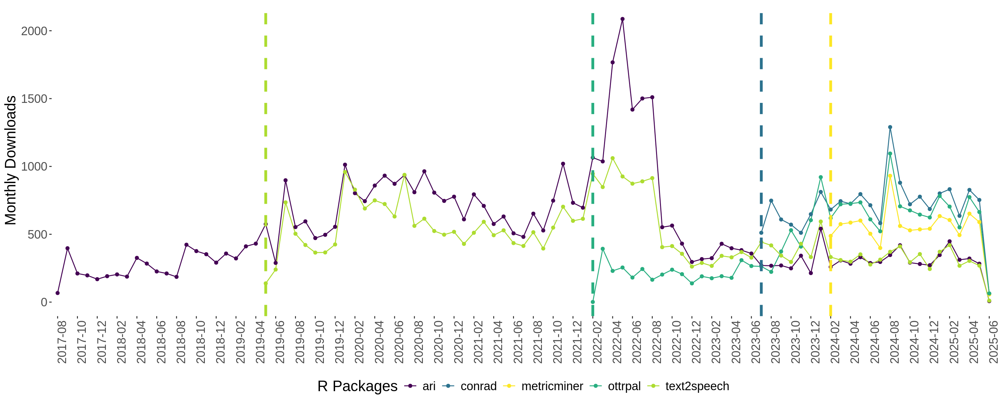
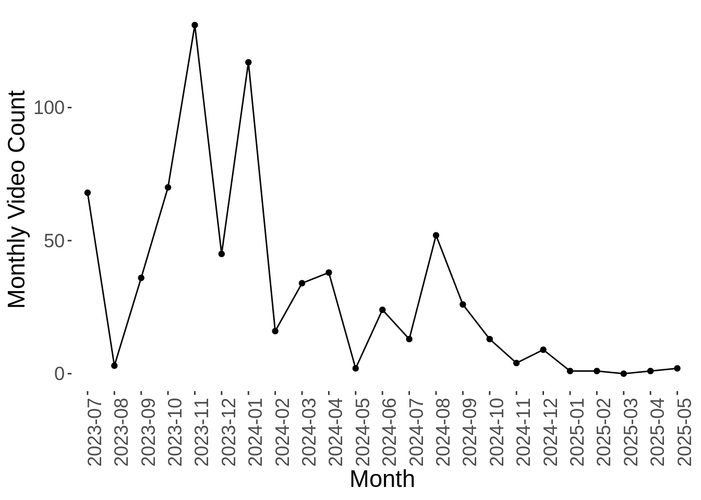

Total downloads, summed across packages, for all time:
131,026
There are 47 GitHub epositories receiving updates from the OTTR_Template. 37 of those are within the jhudsl, fhdsl, or ottrproject organizations
There are 20 GitHub epositories receiving updates from the OTTR_Template_Website. 12 of those are within the jhudsl, fhdsl, or ottrproject organizations
Number of unique Loqui users:
26
Number of videos made with Loqui:
733

The highest single day usage of Loqui was on 2024-01-19, with a total of 57 videos produced. There have been a total of 2 days where at least 25 videos were made with Loqui.